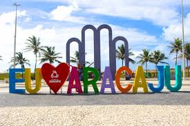

Orla de Atalaia

Na Orla de Atalaia existem opções de lazer como bares e casas de dança e música, além de barracas de água de coco e quadras de basquete futebol, tênis e uma pista de skate. Considerada uma das mais bonitas do Brasil ofereçe aos cidadãos e turistas o que há de melhor em lazer e entretenimento.
Roteiro Turístico em 1 Dia
- Café da manhã em uma das barracas da Orla.
- Caminhada até os Arcos da Atlaia para fotos.
- Visita ao Oceanário de Aracaju (Projeto Tamar).
- Almoço com frutos do mar.
- Tarde de livre para banho de mar e esportes
- Fim de tarde com água de coco observando o pôr do sol.